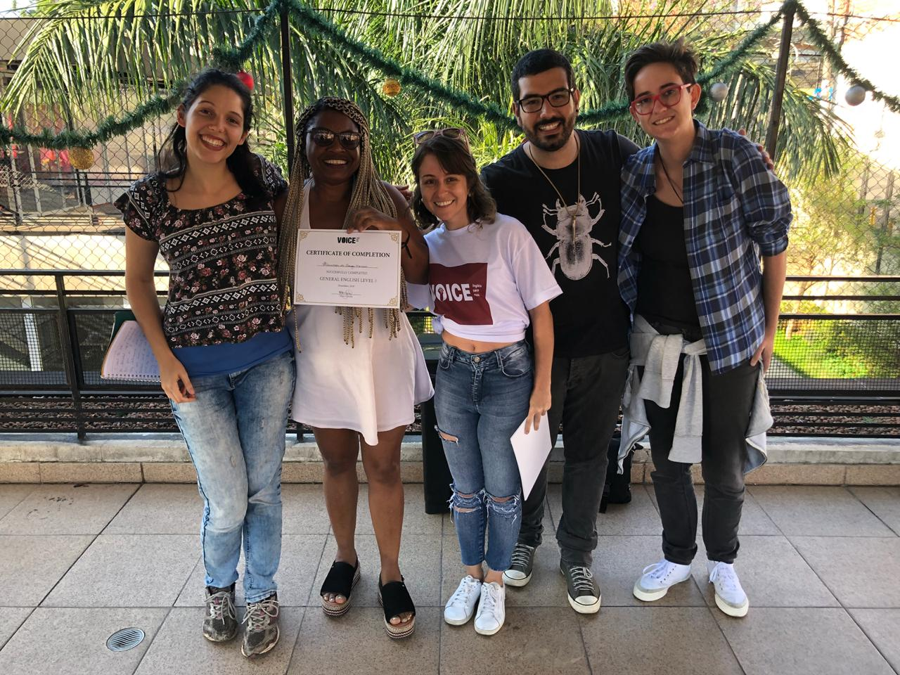

Hi! My name is Renata Rapyo and I have been working as a System Game Designer since early 2018. I've moved through careers until I figured out that working with games is my dream and that I must be in places where I can apply my analytical skill set and problem-solving mindset to the fullest. I am a very curious person, I love to learn and I'm restless.
I started my career studying business and administration to get a better understanding of how businesses worked. After that, I decided to get a bachelor's degree in marketing and advertising so that I would learn how to sell products and how to communicate as effectively as possible.
I worked at the biggest media vehicle in Latin America, learned how things worked in different media and how to evaluate advertisements. After that, I moved on to working in communication agencies so that I could get a proper experience in creating and managing campaigns for products in diverse areas such as pharmaceuticals, beauty and major auto sellers.
I wasn’t quite satisfied with what I was doing so I decided to learn how to build a business from zero and went to work in a startup accelerator. This led me to a better understanding of the main areas of a business and how to see and analyze KPIs.
Finally, I figured out that I was ready to move on to something that made my eyes spark with joy and started looking for positions on the Game Industry, which is what led me to my current job as a System Designer.
Whenever I have the chance I participate in Game Jams and try to create meaningful and educational experiences for the players. Apart from that, I’ve been working as a volunteer English teacher for women in an underprivileged community since mid-2017. One of my biggest desires is to make a positive impact on the world.
